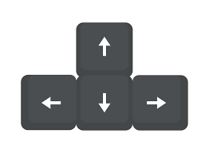
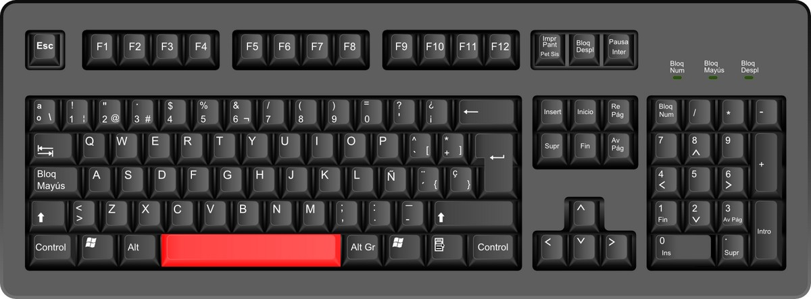

| 1.NOLA MUGITU | 2.NOLA DISPARATU |
|---|---|
 |
 |
|
Hau mugitzeko erabiliko ditudan botoiak dira. 4 fletxa hauekin aurrera, atzera, gora eta behera joan zaitez. Eta hau egiteko behean jarri dudan kodea jarri behar da. |
Eta hau disparoak botatzeko erabiltzen da. Bakarrik teklatuko espazioari emandakoan pertsonai nagusiak disparo bat botako du. Eta disparo hori joango da zuk jokuan begiratzen zauden tokira. Eta hau egiteko kode hauek jarri ditut. |